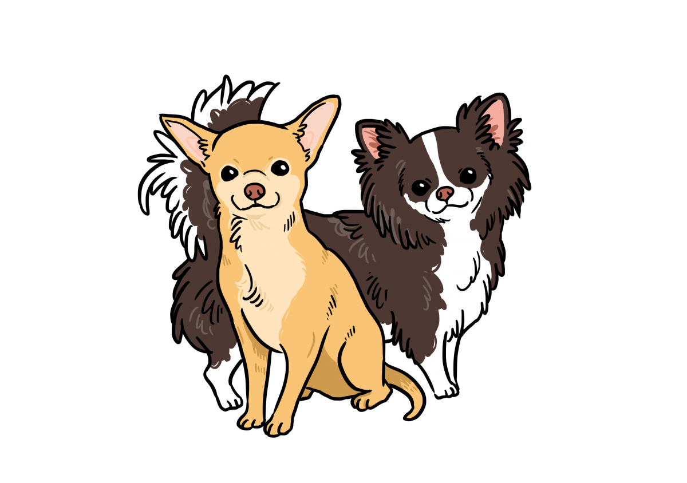
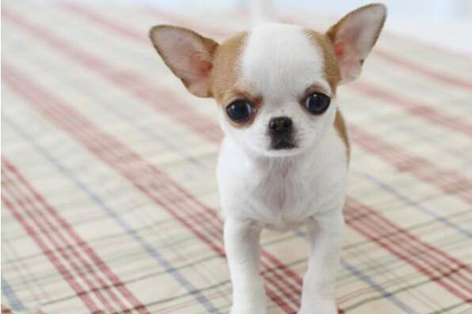
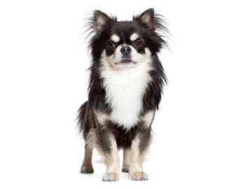
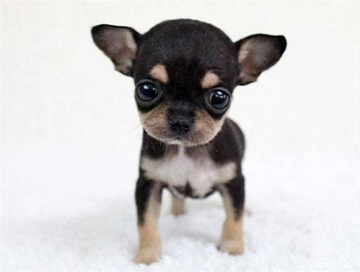

吉娃娃

外表
吉娃娃犬以細小的體型、大眼睛、特別大的耳朵和直豎的尾巴為特徵。以長短毛來分，可分為短毛與長毛，短毛是我們目前較常見的，而長毛吉娃娃身上的毛光澤且柔軟，後肢肌肉較發達。生性懦弱且對冷很敏感，喜歡熱，愛曬太陽。長毛種耳朵、四肢、尾巴皆有裝飾毛，但長度並未拖地，毛色呈多樣化，包括奶油色、紅色、褐色、黑色中摻有黃褐色、各種混色。另外牠們的重量大概介於1至3公斤之間。
性格
時而感到大膽頑皮、活潑好動富感情，勇敢又忠實，易與人親近，對陌生人會有提防心，大部分品種好的吉娃娃是不會亂叫的。由於牠們的體型很細小，身體十分瘦弱，所以極容易受到傷害。牠們細小的體型也為牠們帶來好處：因為牠們體型細小，使牠們能輕易適應現代的生活環境，包括市區和小公寓，適合老年人飼養。一般來說，小心飼養的話，吉娃娃犬都可以有長達17年及以上的壽命。
歷史
目前，有關吉娃娃犬的起源問題，我們所掌握的資料非常少。現在有一個說法，認為吉娃娃犬的祖先可能與9世紀時統治今日墨西哥周邊地區的阿茲提克文明有關。現在的吉娃娃犬只是一種寵物，但在當時卻有著宗教的存在意義，很多時候成為了死者的殉葬寵物。吉娃娃犬被認為是北美最古老的犬種。
今時今日的吉娃娃犬，是於19世紀由美國引入墨西哥當地的原種犬，再與其他犬種混合交配而成的，一開始只有短毛型的品種，之後藉由與蝴蝶犬之類的犬種配種，誕生出長毛型吉娃娃。
飼養注意事項
體質易發胖，需控制體重
生性怕冷，到了冬天要做好保暖準備
容易前肢骨折、後膝十字韌帶斷裂
下顎齒骨脆弱，要多留意牙齒保健


